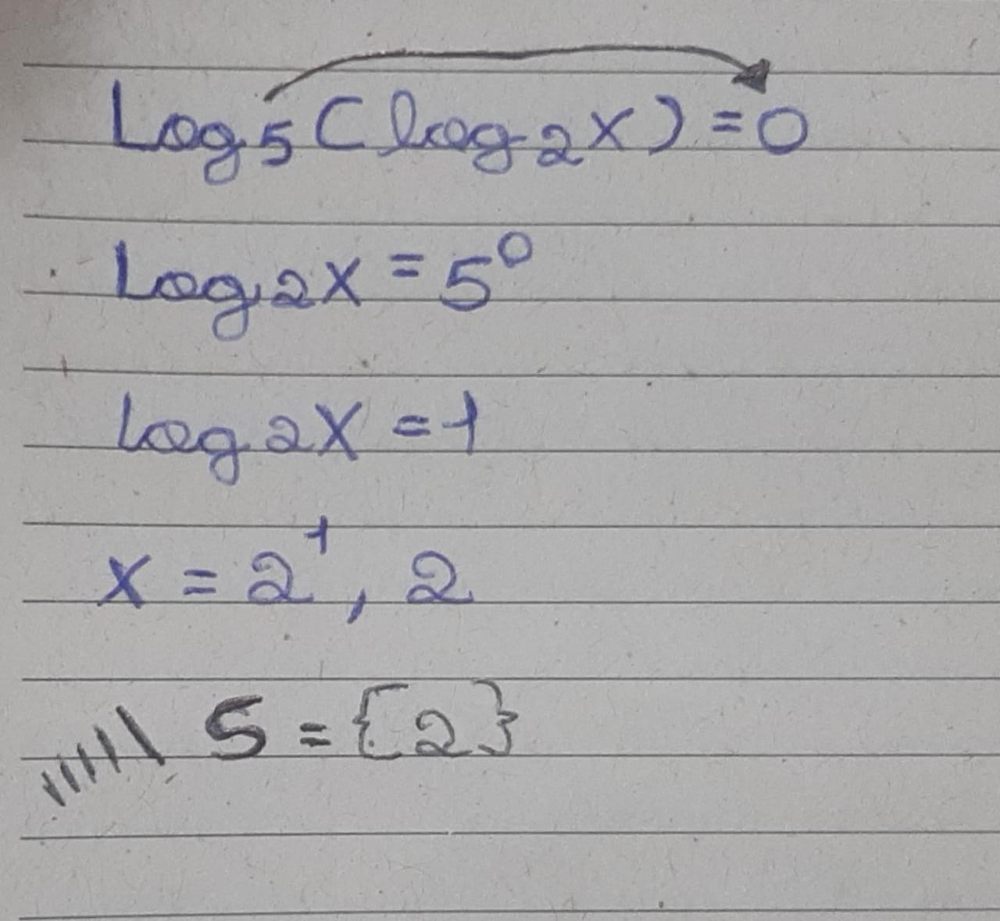

Uma equação logarítmica é aquela que envolve o logaritmo da variável. Em geral, podemos dizer que existem quatro tipos de equações logarítmicas, as quais mostraremos através de exemplos ao longo deste artigo. A ideia principal de uma equação logarítmica é sempre ter dois logaritmos na mesma base, em ambos lados da igualdade, ou um único logaritmo em um lado da igualdade:
As equações logarítmicas são equações que apresentam termos envolvendo logaritmos. Nelas a incógnita pode aparecer no logaritmando, na base do logaritmo ou como o próprio valor do logaritmo. Vejamos os exemplos a seguir:
Diante disso, devemos revisar alguns tópicos sobre logaritmo que serão necessários para a resolução das equações logarítmicas. Se a e b números reais positivos com a 6= 1 (condição de existência), o logaritmo de b na base a é o expoente x, ao qual se deve elevar a base a de modo que a potência ax seja igual a b. Isto é,
loga b = x ⇔ ax = b
Notemos que a partir desta definição obtemos as seguintes consequências e propriedades:
Para resolver uma equação logarítmica, devemos sempre analisar a condição de existência dos logaritmos, usar as consequências da definição e as propriedades mencionadas acima. Em alguns casos, existem logaritmos com bases diferentes em cada termo da equação. Portanto, podemos aplicar a esses termos a propriedade de mudança de base, com a finalidade de obtermos logaritmos com bases comuns. Apresentaremos a seguir alguns exemplos deste tipo de equações:
Exemplo 1. Determinemos o conjunto solução da equação logarítmica: log5(log2 x) = 0
Primeiramente, com relação a condição de existência, notemos que: x > 0
A partir disso, sabemos que para satisfazer a equação o valor de x deve ser positivo e não nulo. Assim, aplicando a definição de logaritmo, temos que se
Em relação ao conteúdo, no começo aparentei ter dificuldade em realizar as atividades propostas, porém consegui comprende-lo bem com o decorrer das aulas, resolvendo mais exercíos e perguntando a professora as explicações das listas de exercíos.